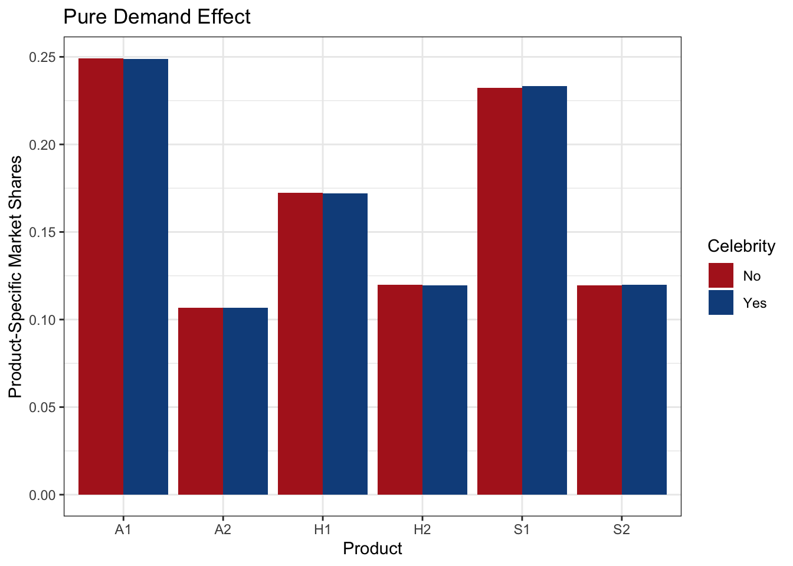
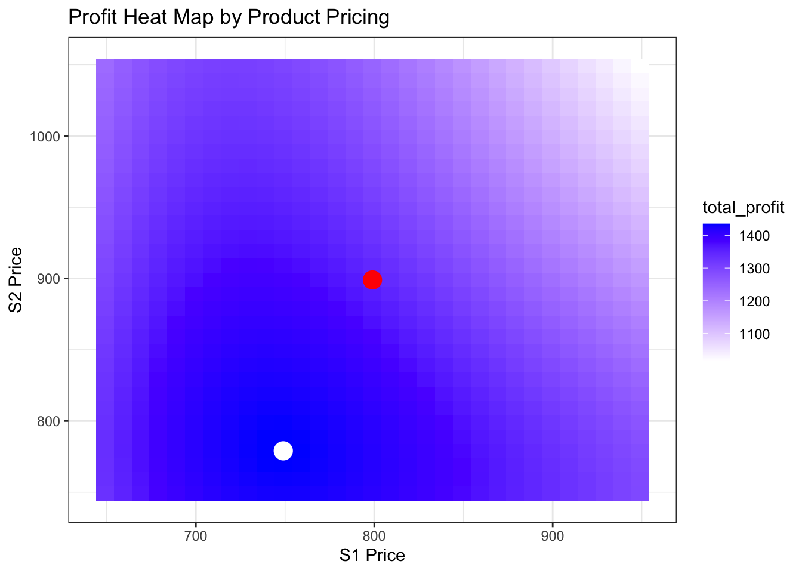

# Data Importing
suppressPackageStartupMessages(library(tidyverse))
suppressPackageStartupMessages(library(mlogit))
# load "enhanced" dataset for fitting mnl model
load("~/Desktop/MGT100 folder/mnl_datasets.RData")
# get the product names for the 6 products
prod_vec <- c("A1", "A2", "S1", "S2", "H1", "H2")
# fit mnl data
out <- mlogit(choice ~ apple:segment +
samsung:segment +
price:segment +
screen_size:segment +
price:total_minutes:segment | 0, data=mdat1) Project 8: Price Optimization Using Demand Models
use the heterogeneous MNL from project 6 to assess whether company should hire a celebrity to affiliate with their brand.
Objective
The objective of this research project is to systematically analyze the impact of celebrity endorsements on the profitability of consumer electronics companies, specifically focusing on Samsung. This study aims to quantify the financial benefits derived from such marketing strategies, evaluate the cost-effectiveness of hiring celebrity endorsers, and provide strategic recommendations for optimizing marketing expenditures. By examining market trends, consumer behavior, and financial outcomes, this research will contribute to a deeper understanding of the role of celebrity endorsements in enhancing corporate profitability and market share.
Library Imports and Data Preparation
Calculate expected profit without celebrity affiliation
# expected/predicted product-specific market shares
pred1 <- colMeans(predict(out, newdata = mdat1))
names(pred1) <- prod_vec
round(pred1*100, 1) A1 A2 S1 S2 H1 H2
24.9 10.7 23.2 11.9 17.2 12.0 # calculate baseline prices and product-specific profits
d1 <- tibble(price1 = 799,
share1 = pred1[3],
price2 = 899,
share2 = pred1[4])
# assumed market size
M <- 10
# calculate quantities and revenues
d1 <- d1 %>% mutate(q1 = share1*M,
q2 = share2*M,
rev1 = q1 * price1,
rev2 = q2 * price2)
# marginal cost for phones S1 and s2
mc1 <- 440
mc2 <- 470
# calculate costs and profits
d1 <- d1 %>% mutate(cost1 = mc1 * q1,
cost2 = mc2 * q2,
profit1 = rev1 - cost1,
profit2 = rev2 - cost2,
total_profit = profit1 + profit2)
# print the result
d1# A tibble: 1 × 13
price1 share1 price2 share2 q1 q2 rev1 rev2 cost1 cost2 profit1
<dbl> <dbl> <dbl> <dbl> <dbl> <dbl> <dbl> <dbl> <dbl> <dbl> <dbl>
1 799 0.232 899 0.119 2.32 1.19 1857. 1073. 1023. 561. 834.
# ℹ 2 more variables: profit2 <dbl>, total_profit <dbl> # calculate pure demand effect of association with a celebrity
# suppose we learn from other market research that a celebrity like
# Celebrity will improve our brand perception by an amount delta.
# And suppose we have done some work to convert delta into a "CCE"
# that is, a celebrity coefficient effect of size 0.005
# celebrity coefficient effect
cce <- 0.005
# let's create an adjusted version of our model where we increase the
# samsung brand-intercept coefficients by the amount of the CCE
out_adj <- out
out_adj$coefficients[4:6] <- out_adj$coefficients[4:6] + cce
# let's look at the original coefficients next to the adjusted ones, where
# we'll see that they are the same except the samsung:segment intercepts
# which are 0.005 higher
cbind(coef(out), coef(out_adj)) [,1] [,2]
apple:segment1 7.644964e-01 7.644964e-01
apple:segment2 8.806709e-01 8.806709e-01
apple:segment3 1.353091e+00 1.353091e+00
segment1:samsung 1.161551e+00 1.166551e+00
segment2:samsung 5.566730e-01 5.616730e-01
segment3:samsung 5.223327e-01 5.273327e-01
segment1:price -1.597733e-02 -1.597733e-02
segment2:price -3.093656e-02 -3.093656e-02
segment3:price -2.899266e-02 -2.899266e-02
segment1:screen_size -5.171158e-01 -5.171158e-01
segment2:screen_size 1.574106e-01 1.574106e-01
segment3:screen_size -1.922263e-01 -1.922263e-01
segment1:price 8.262789e-06 8.262789e-06
segment2:price 1.902141e-05 1.902141e-05
segment3:price 1.702137e-05 1.702137e-05 # calculate revised predictions from this adjusted model
pred2 <- colMeans(predict(out_adj, newdata = mdat1))
names(pred2) <- prod_vec
# calculate change in market shares
shr_change <- pred2 - pred1
names(shr_change) <- prod_vec
# print original expected market shares, now with-celeb market shares,
# and their difference. Notice that we multiple by 100, so the interpretation
# is that affiliation with Kaby leads to a 0.073% increase for the S1 phone and
# a 0.038% increase for the S2 phone
round(pred1*100, 2) A1 A2 S1 S2 H1 H2
24.92 10.68 23.24 11.94 17.24 11.98 round(pred2*100, 2) A1 A2 S1 S2 H1 H2
24.88 10.66 23.32 11.98 17.21 11.95 round(shr_change*100, 3) A1 A2 S1 S2 H1 H2
-0.042 -0.018 0.073 0.038 -0.030 -0.021 # let's plot a comparison of market shares with and without Kaby affiliation.
# You'll see the heights of the bars are very close.
pdat <- rbind(
tibble(celeb="No", product=prod_vec, share=pred1),
tibble(celeb="Yes", product=prod_vec, share=pred2)
)
pdat <- pdat %>% mutate(celeb=fct_inorder(factor(celeb)))
ggplot(pdat) +
geom_col(aes(product, share, fill=celeb), position="dodge") +
ggtitle("Pure Demand Effect") +
ylab("Product-Specific Market Shares") +
xlab("Product") +
scale_fill_manual("Celebrity", values=c(No="Firebrick", Yes="Dodgerblue4")) +
theme_bw()
# calculate new expected profit
d2 <- tibble(price1 = 799,
share1 = pred2[3],
price2 = 899,
share2 = pred2[4])
# calculate quantities, revenues, costs, and profits
d2 <- d2 %>% mutate(q1 = share1*M,
q2 = share2*M,
rev1 = q1 * price1,
rev2 = q2 * price2,
cost1 = mc1 * q1,
cost2 = mc2 * q2,
profit1 = rev1 - cost1,
profit2 = rev2 - cost2,
total_profit = profit1 + profit2)
# print the result
rbind(d1, d2)# A tibble: 2 × 13
price1 share1 price2 share2 q1 q2 rev1 rev2 cost1 cost2 profit1
<dbl> <dbl> <dbl> <dbl> <dbl> <dbl> <dbl> <dbl> <dbl> <dbl> <dbl>
1 799 0.232 899 0.119 2.32 1.19 1857. 1073. 1023. 561. 834.
2 799 0.233 899 0.120 2.33 1.20 1863. 1077. 1026. 563. 837.
# ℹ 2 more variables: profit2 <dbl>, total_profit <dbl> # calculate the change in profit
d2$total_profit - d1$total_profit S1
4.233878 Summary:
The analysis indicates that the engagement of a celebrity endorser results in a substantial profit increment of $4.23 million. Consequently, if the fee charged by the celebrity for endorsement services is less than this amount, it would be financially advantageous for Samsung to proceed with the hiring. This conclusion underscores the potential profitability and strategic value of celebrity endorsements in enhancing company revenue.
Optimizing Prices for S1 and S2 Phones
Hypothesis: Employing Celebrity to Optimize Pricing Strategies for Samsung Phones
In this analysis, we will undertake an optimization exercise similar to the one conducted in the previous week. However, instead of focusing on finding the optimal price point for a single phone, this study will aim to determine the optimal pricing for both the S1 and S2 Samsung phones simultaneously. By employing Kaby, we seek to enhance our pricing strategy to maximize market share and revenue for these two phone models. This comprehensive approach will allow us to better understand the interplay between the prices of the two products and their combined impact on market dynamics and consumer behavior.
# calculate market shares under hypothetical prices
# get a vector of price changes to use for each phone
pvec <- seq(from=-150, to=150, by=10)
# get all combinations of price changes for the two phones
res <- expand.grid(pvec, pvec)
# and construct empty matrix to store shares at each price
smat <- matrix(NA_real_, nrow=nrow(res), ncol=6)
colnames(smat) <- c("A1", "A2", "S1", "S2", "H1", "H2")
res <- cbind(res, smat)
# loop over the 961 price change values
for(i in 1:nrow(res)) {
# print progress (commented out)
# cat("Working on", i, "of", nrow(res), "\n")
# get the price change amount
p1 <- res[i,1]
p2 <- res[i,2]
# change prices for S1 phones
tempdat <- as_tibble(mdat1)
tempdat <- tempdat %>% mutate(price = ifelse(phone_id == "S1", price + p1, price))
tempdat <- tempdat %>% mutate(price = ifelse(phone_id == "S2", price + p2, price))
# make market share predictions with the temporarily-changed S1 and S2 prices
preds <- predict(out_adj, newdata=tempdat)
# calculate and store market shares
res[i,3:8] <- colMeans(preds)
}
# gather prices and estimated shares into a dataframe
d3 <- tibble(scenario = 1:nrow(res),
price1 = res[,1] + 799,
share1 = res[,5],
price2 = res[,2] + 899,
share2 = res[,6])
# calculate quantities, revenues, costs, and profits
d3 <- d3 %>% mutate(q1 = share1*M,
q2 = share2*M,
rev1 = q1 * price1,
rev2 = q2 * price2,
cost1 = mc1 * q1,
cost2 = mc2 * q2,
profit1 = rev1 - cost1,
profit2 = rev2 - cost2,
total_profit = profit1 + profit2)
# plot heat map of profit
ggplot(d3) +
geom_tile(aes(x=price1, y=price2, fill=total_profit)) +
scale_fill_gradient(low="white", high="blue") +
xlab("S1 Price") +
ylab("S2 Price") +
ggtitle("Profit Heat Map by Product Pricing") +
geom_point(data=d3 %>% filter(total_profit == max(total_profit)), aes(price1, price2), color="white", size=5) +
geom_point(data=d2, aes(price1, price2), color="red", size=5) +
theme_bw()
# select profit-maximizing price combination and compare to prior calculations
d3 <- d3 %>% filter(total_profit == max(total_profit)) %>% select(-scenario)
rbind(d1, d2, d3)# A tibble: 3 × 13
price1 share1 price2 share2 q1 q2 rev1 rev2 cost1 cost2 profit1
<dbl> <dbl> <dbl> <dbl> <dbl> <dbl> <dbl> <dbl> <dbl> <dbl> <dbl>
1 799 0.232 899 0.119 2.32 1.19 1857. 1073. 1023. 561. 834.
2 799 0.233 899 0.120 2.33 1.20 1863. 1077. 1026. 563. 837.
3 749 0.261 779 0.203 2.61 2.03 1955. 1585. 1149. 956. 807.
# ℹ 2 more variables: profit2 <dbl>, total_profit <dbl>Summary
The predictive model indicates that, under baseline conditions, Samsung’s profit is estimated to be $1.347 billion. In scenarios where Samsung engages a celebrity for promotional activities, the projected profit experiences a marginal increase, reaching $1.351 billion. However, this figure requires adjustment to account for the costs associated with hiring the celebrity. Furthermore, if Samsung not only hires a celebrity but also optimizes its pricing strategy in conjunction with the celebrity endorsement, the anticipated profit significantly increases to $1.435 billion.
Calculating Change in Profit from Price Optimization
Profit=(Price−Cost)×Quantity
Considerations Elasticity of Demand: The change in quantity sold due to the change in price should reflect the price elasticity of demand for the product. Fixed and Variable Costs: If there are significant fixed costs or if the cost per unit changes with the quantity produced, these should be incorporated into the calculation. Market Conditions: External factors such as competitor pricing, market trends, and consumer preferences should also be considered as they can impact the quantity sold at different price points.
d3$total_profit - d2$total_profit S1
84.28031 Summary
This study utilizes the heterogeneous multinomial logit model (MNL) from Project 6 to evaluate the strategic decision of whether a company should engage a celebrity to endorse their brand. By applying advanced econometric techniques, the analysis aims to quantify the potential impact of celebrity affiliation on consumer choice and market share.
The heterogeneous MNL model allows for the incorporation of individual-specific taste variations and interaction effects, providing a robust framework for understanding the differential influence of celebrity endorsements across diverse consumer segments. The model’s ability to account for heterogeneity in preferences is crucial in capturing the nuanced effects that a celebrity endorser might have on different demographic and psychographic groups within the target market.
By systematically examining the predicted changes in market share under various scenarios of celebrity endorsement, this research offers valuable insights into the potential return on investment for the company. The findings are expected to guide strategic marketing decisions by highlighting the conditions under which celebrity endorsements are most likely to enhance brand equity and drive consumer engagement.
In conclusion, the application of the heterogeneous MNL model in this context underscores the importance of leveraging sophisticated statistical tools to inform marketing strategies, ensuring that decisions are data-driven and tailored to the specific dynamics of the consumer market.